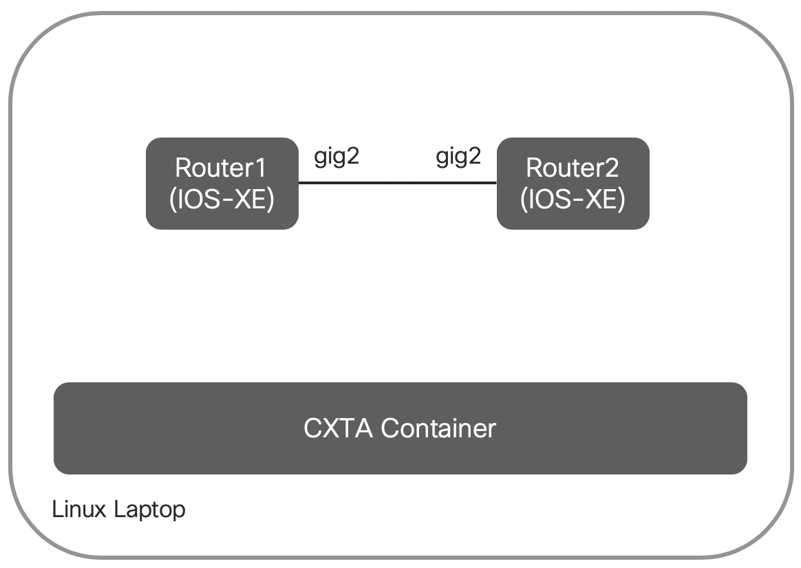

Bringing up the Topology
Overview
We have created a setup on this laptop you are sitting in front of which consists of
- a CXTA docker container containing the Python runtime environment to execute the tests
- two virtual IOS-XE devices which serve as units-under-test (UUT)
The setup is depicted in the below diagram.

Start the Environment
To start the environment, please execute the following commands from your Linux shell:
1 2 | cd xxx/DEVWKS-1407 ./start-routers.sh |
This shell script performs the following tasks:
- It uses Vagrant to bring up the two IOS-XE virtual routers (using Virtualbox)
- Performs an initial configuration of the devices (essentially setting the hostname and configures IPv4/IPv6 on the link between the devices)
- Creates a testbed.yaml file which contains the device credentials and SSH ports to connect to the two virtual devices
- Starts the CXTA container (using docker-compose)
As a final step, a Robot/CXTA test is run which verifies the basic connectivity.
If all went well, the script output should end with below:
1 2 3 4 5 6 7 8 9 10 | ============================================================================== Test-Vms ============================================================================== connect to all devices | PASS | Connected to ['r1', 'r2'] ------------------------------------------------------------------------------ Test-Vms | PASS | 1 critical test, 1 passed, 0 failed 1 test total, 1 passed, 0 failed ============================================================================== |
If the test shows an error, it typically points to an issue bringing up the VM. Please refer to the next paragraph for some troubleshooting guidance.
Please check for a full output of a working startup at the end of this page.
Please move on to the next chapter to create and execute your first test case.
Troubleshooting the Start
You should first check if both VMs are up and running using the vagrant status command. You should see two VMs running:
1 2 3 4 5 | $ vagrant status Current machine states: r1 running (virtualbox) r2 running (virtualbox) |
If this is not the case, please try to re-execute the ./start-routers.sh script from above. If this still fails, please kill the VMs before trying again:
1 2 3 4 5 | $ vagrant destroy -f [...] $ ./start-routers.sh |
If both VMs show up as running, you should be able to ssh into them, using the vagrant ssh xx command (replacing xx by the router name, i.e. r1 or r2):
1 2 3 4 | [devnet@oli-test-w CLEUR20-CXTA]$ vagrant ssh r1 r1# |
You can then verify the connectivity between the two routers via the direct connection, for example by checking the routing adjacency (using show ip ospf neighbor), you should see one neighbour:
1 2 3 4 5 | r1#show ip ospf neighbor Neighbor ID Pri State Dead Time Address Interface 10.0.0.2 1 FULL/BDR 00:00:38 172.16.0.2 GigabitEthernet2 r1# |
Use exit to exit from the device(s).
Appendix: Sample Startup Output
1 2 3 4 5 6 7 8 9 10 11 12 13 14 15 16 17 18 19 20 21 22 23 24 25 26 27 28 29 30 31 32 33 34 35 36 37 38 39 40 41 42 43 44 45 46 47 48 49 50 51 52 53 54 55 56 57 58 59 60 61 62 63 64 65 66 67 68 69 70 71 72 73 74 75 76 77 78 79 80 81 82 83 84 85 86 87 88 89 90 91 92 93 94 95 96 97 98 99 100 101 102 103 104 105 106 107 108 109 110 111 112 113 114 115 116 117 118 119 120 121 122 123 124 125 126 127 128 129 130 131 132 133 134 135 136 137 138 139 140 141 142 143 144 145 146 147 148 149 150 151 152 153 154 155 156 157 158 159 160 161 162 163 164 165 166 167 168 169 170 171 172 173 174 175 176 177 178 179 180 181 182 183 184 185 186 187 188 189 190 191 192 193 194 195 196 197 198 199 200 201 202 203 | $ ./start-routers.sh Bringing machine 'r1' up with 'virtualbox' provider... ==> r1: Clearing any previously set forwarded ports... ==> r1: Clearing any previously set network interfaces... ==> r1: Preparing network interfaces based on configuration... r1: Adapter 1: nat r1: Adapter 2: intnet r1: Adapter 3: intnet ==> r1: Forwarding ports... r1: 830 (guest) => 2223 (host) (adapter 1) r1: 80 (guest) => 2224 (host) (adapter 1) r1: 443 (guest) => 2225 (host) (adapter 1) r1: 8443 (guest) => 2226 (host) (adapter 1) r1: 22 (guest) => 2222 (host) (adapter 1) ==> r1: Running 'pre-boot' VM customizations... ==> r1: Booting VM... ==> r1: Waiting for machine to boot. This may take a few minutes... r1: SSH address: 127.0.0.1:2222 r1: SSH username: vagrant r1: SSH auth method: private key ==> r1: Machine booted and ready! ==> r1: Checking for guest additions in VM... r1: No guest additions were detected on the base box for this VM! Guest r1: additions are required for forwarded ports, shared folders, host only r1: networking, and more. If SSH fails on this machine, please install r1: the guest additions and repackage the box to continue. r1: r1: This is not an error message; everything may continue to work properly, r1: in which case you may ignore this message. ==> r1: Machine already provisioned. Run `vagrant provision` or use the `--provision` ==> r1: flag to force provisioning. Provisioners marked to run always will still run. ==> r1: Machine 'r1' has a post `vagrant up` message. This is a message ==> r1: from the creator of the Vagrantfile, and not from Vagrant itself: ==> r1: ==> r1: ==> r1: Welcome to the IOS XE VirtualBox. ==> r1: To connect to the XE via ssh, use: 'vagrant ssh'. ==> r1: To ssh to XE's NETCONF or RESTCONF agent, use: ==> r1: 'vagrant port' (vagrant version > 1.8) ==> r1: to determine the port that maps to the guestport, ==> r1: ==> r1: The password for the vagrant user is vagrant ==> r1: ==> r1: IMPORTANT: READ CAREFULLY ==> r1: The Software is subject to and governed by the terms and conditions ==> r1: of the End User License Agreement and the Supplemental End User ==> r1: License Agreement accompanying the product, made available at the ==> r1: time of your order, or posted on the Cisco website at ==> r1: www.cisco.com/go/terms (collectively, the 'Agreement'). ==> r1: As set forth more fully in the Agreement, use of the Software is ==> r1: strictly limited to internal use in a non-production environment ==> r1: solely for demonstration and evaluation purposes. Downloading, ==> r1: installing, or using the Software constitutes acceptance of the ==> r1: Agreement, and you are binding yourself and the business entity ==> r1: that you represent to the Agreement. If you do not agree to all ==> r1: of the terms of the Agreement, then Cisco is unwilling to license ==> r1: the Software to you and (a) you may not download, install or use the ==> r1: Software, and (b) you may return the Software as more fully set forth ==> r1: in the Agreement. Bringing machine 'r2' up with 'virtualbox' provider... ==> r2: Clearing any previously set forwarded ports... ==> r2: Fixed port collision for 830 => 2223. Now on port 2200. ==> r2: Fixed port collision for 80 => 2224. Now on port 2201. ==> r2: Fixed port collision for 443 => 2225. Now on port 2202. ==> r2: Fixed port collision for 8443 => 2226. Now on port 2203. ==> r2: Fixed port collision for 22 => 2222. Now on port 2204. ==> r2: Clearing any previously set network interfaces... ==> r2: Preparing network interfaces based on configuration... r2: Adapter 1: nat r2: Adapter 2: intnet r2: Adapter 3: intnet ==> r2: Forwarding ports... r2: 830 (guest) => 2200 (host) (adapter 1) r2: 80 (guest) => 2201 (host) (adapter 1) r2: 443 (guest) => 2202 (host) (adapter 1) r2: 8443 (guest) => 2203 (host) (adapter 1) r2: 22 (guest) => 2204 (host) (adapter 1) ==> r2: Running 'pre-boot' VM customizations... ==> r2: Booting VM... ==> r2: Waiting for machine to boot. This may take a few minutes... r2: SSH address: 127.0.0.1:2204 r2: SSH username: vagrant r2: SSH auth method: private key ==> r2: Machine booted and ready! ==> r2: Checking for guest additions in VM... r2: No guest additions were detected on the base box for this VM! Guest r2: additions are required for forwarded ports, shared folders, host only r2: networking, and more. If SSH fails on this machine, please install r2: the guest additions and repackage the box to continue. r2: r2: This is not an error message; everything may continue to work properly, r2: in which case you may ignore this message. ==> r2: Machine already provisioned. Run `vagrant provision` or use the `--provision` ==> r2: flag to force provisioning. Provisioners marked to run always will still run. ==> r2: Machine 'r2' has a post `vagrant up` message. This is a message ==> r2: from the creator of the Vagrantfile, and not from Vagrant itself: ==> r2: ==> r2: ==> r2: Welcome to the IOS XE VirtualBox. ==> r2: To connect to the XE via ssh, use: 'vagrant ssh'. ==> r2: To ssh to XE's NETCONF or RESTCONF agent, use: ==> r2: 'vagrant port' (vagrant version > 1.8) ==> r2: to determine the port that maps to the guestport, ==> r2: ==> r2: The password for the vagrant user is vagrant ==> r2: ==> r2: IMPORTANT: READ CAREFULLY ==> r2: The Software is subject to and governed by the terms and conditions ==> r2: of the End User License Agreement and the Supplemental End User ==> r2: License Agreement accompanying the product, made available at the ==> r2: time of your order, or posted on the Cisco website at ==> r2: www.cisco.com/go/terms (collectively, the 'Agreement'). ==> r2: As set forth more fully in the Agreement, use of the Software is ==> r2: strictly limited to internal use in a non-production environment ==> r2: solely for demonstration and evaluation purposes. Downloading, ==> r2: installing, or using the Software constitutes acceptance of the ==> r2: Agreement, and you are binding yourself and the business entity ==> r2: that you represent to the Agreement. If you do not agree to all ==> r2: of the terms of the Agreement, then Cisco is unwilling to license ==> r2: the Software to you and (a) you may not download, install or use the ==> r2: Software, and (b) you may return the Software as more fully set forth ==> r2: in the Agreement. Setting up r1 r1#conf term Enter configuration commands, one per line. End with CNTL/Z. r1(config)#hostname r1 r1(config)#ipv6 unicast-routing r1(config)#no ip domain-lookup r1(config)#default interface Loopback0 Interface Loopback0 set to default configuration r1(config)#interface loopback0 r1(config-if)# ip address 10.0.0.1 255.255.255.255 r1(config-if)# ipv6 address fd00:0:0:0::1/128 r1(config-if)# ip ospf 1 area 0 r1(config-if)# ipv6 ospf 1 area 0 r1(config-if)#default interface GigabitEthernet2 Interface GigabitEthernet2 set to default configuration r1(config)#interface GigabitEthernet2 r1(config-if)# no shut r1(config-if)# ip address 172.16.0.1 255.255.255.0 r1(config-if)# ipv6 address fd00:a:a:a:2::1/64 r1(config-if)# ip ospf 1 area 0 r1(config-if)# ipv6 ospf 1 area 0 r1(config-if)#end r1#write Building configuration... [OK] r1#exit Connection to 127.0.0.1 closed by remote host. Setting up r2 r2#conf term Enter configuration commands, one per line. End with CNTL/Z. r2(config)#hostname r2 r2(config)#ipv6 unicast-routing r2(config)#no ip domain-lookup r2(config)#default interface Loopback0 Interface Loopback0 set to default configuration r2(config)#interface loopback0 r2(config-if)# ip address 10.0.0.2 255.255.255.255 r2(config-if)# ipv6 address fd00:0:0:0::2/128 r2(config-if)# ip ospf 1 area 0 r2(config-if)# ipv6 ospf 1 area 0 r2(config-if)#default interface GigabitEthernet2 Interface GigabitEthernet2 set to default configuration r2(config)#interface GigabitEthernet2 r2(config-if)# no shut r2(config-if)# ip address 172.16.0.2 255.255.255.0 r2(config-if)# ipv6 address fd00:a:a:a:2::2/64 r2(config-if)# ip ospf 1 area 0 r2(config-if)# ipv6 ospf 1 area 0 r2(config-if)#end r2#write Building configuration... [OK] r2#exit Connection to 127.0.0.1 closed by remote host. Setting up testbed.yaml r1, 127.0.0.1:2222, IdentityFile /home/devnet/.vagrant.d/insecure_private_key r2, 127.0.0.1:2204, IdentityFile /home/devnet/.vagrant.d/insecure_private_key starting cxta container Starting cxta_devnet ... done Starting cxta_docs ... done ============================================================================== Test-Vms ============================================================================== connect to all devices | PASS | Connected to ['r1', 'r2'] ------------------------------------------------------------------------------ Test-Vms | PASS | 1 critical test, 1 passed, 0 failed 1 test total, 1 passed, 0 failed ============================================================================== Output: /tmp/output.xml Log: /tmp/log.html Report: /tmp/report.html |